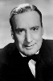
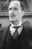

Country:United States, 72 minutes
Spoken languages:
Genres:Crime, Mystery, Thriller
Director(s):Edwin L. Marin
Writer(s):Robert Florey
Video Codec:Unknown
Number: 1736


Certification:NR
Storyline:
In London, a secret society led by lawyer Thaddeus Merrydew collects the assets of any of its deceased members and divides them among the remaining members. Society members start dropping like flies. Sherlock Holmes is approached by member James Murphy's widow, who is miffed at being left penniless by her husband. When Captain Pyke is shot, Holmes keys in on his mysterious Chinese widow as well as the shady Merrydew. Other members keep dying: Malcom Dearing first, then Mr. Baker. There is also an attempt on the life of young Eileen Forrester, who became a reluctant society member upon the death of her father. Holmes' uncanny observations and insights are put to the test.
Cast:  
Medium: Original DVD,
Comments: Part of: Mystery Classics - 50 Movie Pack
Loaned: No
Aspect ratio: Unknown